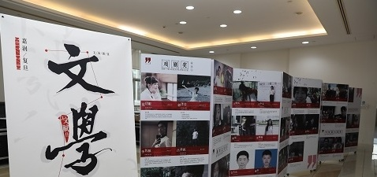

热线电话:
520-521-1314


复旦大学以自由、多彩、向上的校园文化而著称。复旦的校园文化有很多表现维度，如优良的校风学风、浓郁的学术气息、自由争鸣的思想、自主多元的选择、开放包容的心态，也有很多内容板块，如一年2000多场讲座和论坛、几十项体育赛事、上百场文艺演出和文化展览、310多个学生社团、近500个社会实践项目、近千人次的课外学术创新、上万人次的志愿服务，等等。校园文化就像土壤和空气一样，涵养着一代又一代的复旦人。复旦的师生和校友通过广泛参与和体验，自觉地呵护它、培植它。学校传统因此承续，复旦精神赖此弘扬，并超越校园、影响社会。在这种共有、共建、共享的过程中，复旦人逐渐养成了固有的品格，那就是理想情怀、社会责任和理性精神。
复旦校园文化的开放性、多样性，决定了在这样一个社区里，发布和获取有效信息委实不易。文化日历就是一个信息平台，可以通过投稿方式接收各类文化活动讯息，并通过学校的网站、广播、多媒体显示屏系统、新媒体和手机终端等综合渠道推送给特定人群，或普通大众，以方便师生，促进校园文化的共享。
志愿服务已经成为复旦学生中的流行文化。目前，学校共建立起42个志愿者服务站和38个长期服务基地，有50余个院系志愿服务队和公益类社团开展定点或长期志愿服务活动。汶川大地震后，复旦有1077人参与抗震救灾青年志愿者服务队；先后为北京奥运会、残奥会、上海世游赛输出志愿者1300人次；年招募培训各类大型赛会场馆志愿者近700人次。世博期间，更是全校动员，“小白菜”、“小蓝莓”蜚声中外。